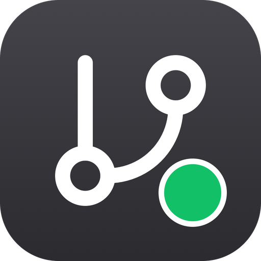

CI status at a glance
A tray-resident GitHub CI status dashboard — no more opening the browser to check if CI passed. When something fails, drill down to the failing job ▸ step without ever opening a web page.
Push, switch away, and relax: it will shout when things go red, and open it to fix.
Not notarized yet — macOS first launch needs a one-time approval. See the guide →
One dot in your menu bar — aggregated worst status across every repo you watch.
Everything you need to stop babysitting CI in a browser tab.
One dot for every repo you monitor — aggregated worst status in five states: green, red with a failure count, orange while running, gray with no CI, purple on API errors.
Drill straight to the failing job ▸ step with duration and a direct log link — copy the error excerpt without ever opening a browser.
An instant alert when a build fails, a gentle note when it recovers — each toggleable, in your language. Clicking one brings the panel up.
Authorize once through the browser with GitHub's Device Flow — the same as gh auth login. No tokens to create or paste; the token lives only in your system keychain.
Runs entirely on your machine: no server, no account, no telemetry. ETag conditional requests keep you comfortably below GitHub's rate limits.
Built on Tauri 2 with the system WebView — a tiny footprint, no Electron. The UI speaks English and Chinese, following your system language.
Pin Glint’s compact list to your desktop — frosted by the system, sitting under your windows, always up to date.
It first appears in the center of the screen so you can’t miss it — drag it anywhere and the position is remembered. Enable it from Manage → Desktop widget.
Pinned to the macOS desktop layer: there on every Space, never stealing focus, quietly sitting beneath whatever you are doing. Also available on Windows and Linux.
Liquid Glass on macOS 26+, Acrylic on Windows, a translucent fallback on Linux — it reads like part of your wallpaper.
Drag by the header and resize freely — position and size are remembered, with a one-click reset to the center. Right-click to refresh, open the panel, or close.
Rides the same polling as the tray and the panel — zero extra API calls. Click a row to jump straight to that repo’s Actions page.
No config files, no token juggling.
Open Glint — a dot appears in your menu bar.
Authorize once through GitHub in your browser.
Tick the repositories to watch from a fetched checklist.
The tray reflects CI from now on; failures pop a notification.
Drag Glint into Applications, then approve it once on first launch.
Not notarized yet — follow the three steps below once, and it opens normally from then on.
"Glint" Not Opened
Don’t click Move to Trash
Choose Privacy & Security in the sidebar
Security
Glint was blocked
from an unidentified developer
In the Security pane, enter your password once
xattr -cr /Applications/Glint.app then open Glint again.
Universal binary (Apple Silicon + Intel) via GitHub Releases.
deb / AppImage packages via GitHub Releases.
MSI / NSIS installer via GitHub Releases.